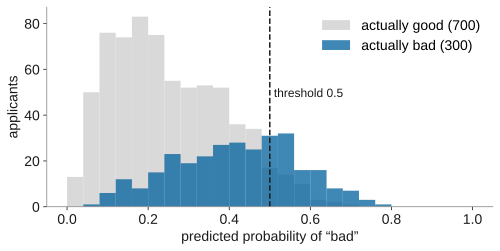
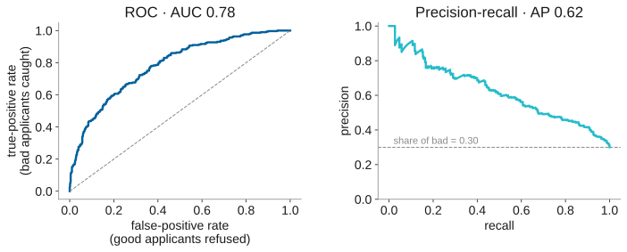
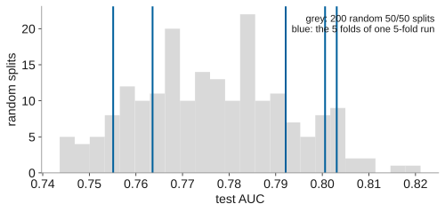
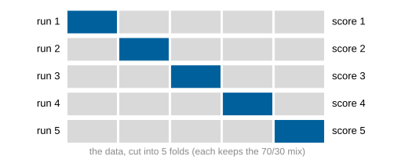
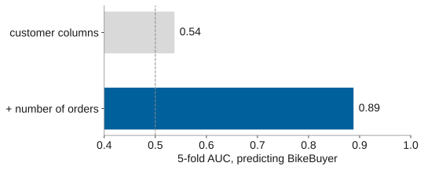

name: title layout: true class: cover --- count: false .section-mark.center[ ## Measuring a classifier ### Metrics, thresholds and cross-validation <br /> Oscar Esteban <<code>oscar.esteban@hevs.ch</code>> <br /> EAD · Exploration avancée de données et intelligence décisionnelle · 16.10.2026 ] ??? --- name: newsection layout: true .perma-sidebar[ <p class="rotate"> <a rel="license" href="http://creativecommons.org/licenses/by/4.0/"><img alt="Creative Commons License" style="border-width:0; height: 20px; padding-top: 6px;" src="https://i.creativecommons.org/l/by/4.0/88x31.png" /></a> <span style="padding-left: 10px; font-weight: 600;">Measuring a classifier (16.10.2026)</span> </p> ] --- # Two Fridays, four half-days .cards.cols-4.vcenter[ .card.accent[ .kicker[16.10 · morning] ### Measuring a classifier Metrics, thresholds, cross-validation. ] .card[ .kicker[16.10 · afternoon] ### Beyond two classes Multi-class, deep learning. ] .card.muted[ .kicker[23.10 · morning] ### Text Text mining, sentiment. ] .card.muted[ .kicker[23.10 · afternoon] ### Time Time series. ] ] ??? --- # Today's question decides your Projet EAD grade .boxed-content.large[ Your final deliverable is a model **and the evidence that it works**. By noon you can answer, for any classifier: * What does it get wrong, and what does each mistake cost? * Where should the threshold be? * How much of the score is luck, and how much is leakage? ] ??? --- .section-mark[ # From a score to a decision ] --- # A classifier outputs a probability, not a decision .boxed-content.center[ <p></p> ] .footnote[German credit (Statlog, UCI): 1,000 applicants, 700 good, 300 bad. Random forest, cross-validated on 5 folds, scikit-learn: Dataiku's numbers will be close, not identical.] ??? --- # Name the positive class first .cards.cols-2[ .card.accent[ .kicker[positive] ### bad The class you **act on**: refuse the loan. .foot[Recall and precision are always *about* this class.] ] .card.muted[ .kicker[negative] ### good The class you leave alone: grant the loan. ] ] .admonition.warning[ <i class="fa-solid fa-triangle-exclamation"></i> Dataiku picks one of the two values as positive. Check which before you read any metric. ] ??? --- # A threshold turns each probability into a decision .cm.data-table.center[ <table> <thead><tr><th>threshold 0.5</th><th>refused (predicted bad)</th><th>granted (predicted good)</th></tr></thead> <tbody> <tr><td>actually bad (300)</td><td class="hit">108 · true positives</td><td class="miss">192 · false negatives</td></tr> <tr><td>actually good (700)</td><td class="miss">42 · false positives</td><td class="hit">658 · true negatives</td></tr> </tbody> </table> ] .large.center[192 bad loans granted, 42 good customers turned away.] ??? --- .section-mark[ # Reading the matrix ] --- # Start with the baseline .cards.cols-2[ .card.muted[ .kicker[grant every loan] .metric[70.0%] accurate, with no model at all. ] .card[ .kicker[random forest, threshold 0.5] .metric[76.6%] accurate. ] ] .large.center[Accuracy rewards the majority class. Report it **next to the baseline**, or not at all.] ??? --- # Each metric answers one business question .data-table.center[ | metric | question | at 0.5 | |---|---|---| | **precision** | Of the applicants we refuse, how many were really bad? | 108 / 150 = **72%** | | **recall** | Of the bad applicants, how many do we refuse? | 108 / 300 = **36%** | | **F1** | One number balancing the two (harmonic mean) | **0.48** | | **accuracy** | How many decisions are right? | 766 / 1000 = **76.6%** | ] ??? --- # Moving the threshold trades precision for recall .boxed-content.center[ <img src="images/threshold-tradeoff.svg" style="width: 80%;" /> ] ??? --- # Hands-on 1: watch the threshold at work .boxed-content.large[ **The need.** The bank's risk committee will ask what the model does at different thresholds before it approves any of them. **What you do.** Train a model on `german_credit`, open its confusion matrix, move the threshold and record what changes. **How.** Worksheet *Hands-on 1*, steps 1 to 3. Pairs. 30 minutes. ] ??? --- # Which threshold would you put in production? .admonition.question[ <i class="fa-solid fa-circle-question"></i> And why can't the model tell you? ] ??? --- .section-mark[ # Costs decide the threshold ] --- # Errors do not cost the same .cm.data-table.center[ <table> <thead><tr><th>cost of a decision</th><th>refuse</th><th>grant</th></tr></thead> <tbody> <tr><td>actually bad</td><td>0</td><td class="hit">5</td></tr> <tr><td>actually good</td><td class="hit">1</td><td>0</td></tr> </tbody> </table> ] .large.center[Granting a loan that defaults costs **five times** more than refusing a good customer.] .footnote[The cost matrix published with the Statlog German credit data.] ??? --- # The costs give the threshold .boxed-content.center.large[ Refuse when granting is expected to cost more than refusing: .formula[ P(bad) × 5 > (1 − P(bad)) × 1 ⟺ P(bad) > 1 / (1 + 5) ≈ **0.17** ] <br /> Valid when the probabilities are well calibrated. Otherwise, search for the threshold that minimises the cost. ] ??? --- # The cost-optimal threshold halves the bill .boxed-content.center[ <img src="images/cost-vs-threshold.svg" style="width: 78%;" /> ] ??? --- # Same model, three thresholds, three businesses .cm.data-table.center[ <table> <thead><tr><th>threshold chosen for</th><th>t</th><th>bad refused</th><th>good refused</th><th>bad granted</th><th>cost</th></tr></thead> <tbody> <tr><td>the default</td><td>0.50</td><td>108</td><td>42</td><td>192</td><td>1,002</td></tr> <tr><td>F1</td><td>0.32</td><td>224</td><td>210</td><td>76</td><td>590</td></tr> <tr><td class="hit">cost</td><td class="hit">0.16</td><td>288</td><td>464</td><td>12</td><td class="hit">524</td></tr> </tbody> </table> ] .large.center[F1 ignores the costs. Choose the metric **from** the costs.] ??? --- # A cheap threshold can still be an unfair one .cards.cols-2[ .card[ .kicker[in this dataset] ### Protected attributes Sex and marital status, age, foreign-worker status are columns the model can use. ] .card.alert[ .kicker[EU AI Act, Annex III] ### High-risk use Scoring the creditworthiness of people is a high-risk AI system: documentation, oversight and bias checks are required. ] ] .large.center[Dataiku's *model fairness report* compares error rates across groups.] ??? --- .section-mark[ # Views that need no threshold ] --- # ROC and PR curves summarise every threshold .boxed-content.center[ <p></p> ] .footnote[AUC: the chance that a random bad applicant scores above a random good one. Precision-recall's baseline is the share of positives.] ??? --- # Gains answer "how many can we review?" .boxed-content.center[ <img src="images/cumulative-gains.svg" style="width: 62%;" /> .large[If analysts can check 200 files, the model's top 200 hold 45% of the bad loans.] ] ??? --- .section-mark[ # How sure are we? ] --- # One split is one draw .boxed-content.center[ <p></p> ] .large.center[Same data, same model: the test AUC ranges from 0.75 to 0.82 depending on the split alone.] ??? --- # Cross-validation tests every row exactly once .boxed-content.center[ <p></p> ] .large.center[*Stratified*: every fold keeps the 70/30 mix. Report the mean **and** the spread.] ??? --- # Read the ± as spread, and compare fold by fold .cards.cols-3[ .card[ .kicker[the ±] ### Spread of the folds How much the score moves between folds. Not a confidence interval. ] .card[ .kicker[two models] ### Same folds, paired Count the folds where A beats B. Overlapping ± says little. ] .card.alert[ .kicker[the trap] ### Tuned on the folds Choosing the model and threshold on the folds flatters the score. Keep a test set you never tune on. ] ] ??? --- # Hands-on 1, continued: costs and folds .boxed-content.large[ **The need.** The committee approved the cost matrix. It now wants the threshold it implies, and how stable the model's score is. **What you do.** Enter the costs, read the optimal threshold, switch to 5-fold and compare two algorithms fold by fold. **How.** Worksheet *Hands-on 1*, below the checkpoint bar. 25 minutes. ] ??? --- .section-mark[ # Too good to be true ] --- # One column took Zalaxus from chance to 0.89 .boxed-content.center[ <p></p> ] .large.center[`BikeBuyer` is computed from the orders: a customer with a bike among them. Counting orders hands the answer to the model.] ??? --- # Leaks to hunt before you trust a score .boxed-content.large[ * A column recorded **after** the outcome (orders, payments, follow-ups). * A column that **re-encodes** the target, or the target itself under another name. * **Duplicates** across training and test rows. * Preparation **fitted on all the data** before the split. * Time ignored: training on the future, testing on the past. ] <div class="clear"></div> .large.center[An AUC near 1.0 on a business problem is a bug report.] ??? --- # Your Projet EAD evaluation, as a checklist .boxed-content.large.no-bullet[ - <i class="fa-regular fa-square"></i> The positive class is named. - <i class="fa-regular fa-square"></i> Every metric sits next to its baseline. - <i class="fa-regular fa-square"></i> The metric follows from what each error costs. - <i class="fa-regular fa-square"></i> The threshold is chosen and justified. - <i class="fa-regular fa-square"></i> Scores come from stratified cross-validation, with their spread. - <i class="fa-regular fa-square"></i> A held-out check was never used for tuning. - <i class="fa-regular fa-square"></i> You hunted for leaks, and say how. ] ??? --- .section-mark[ # After lunch: more than two classes ] ???